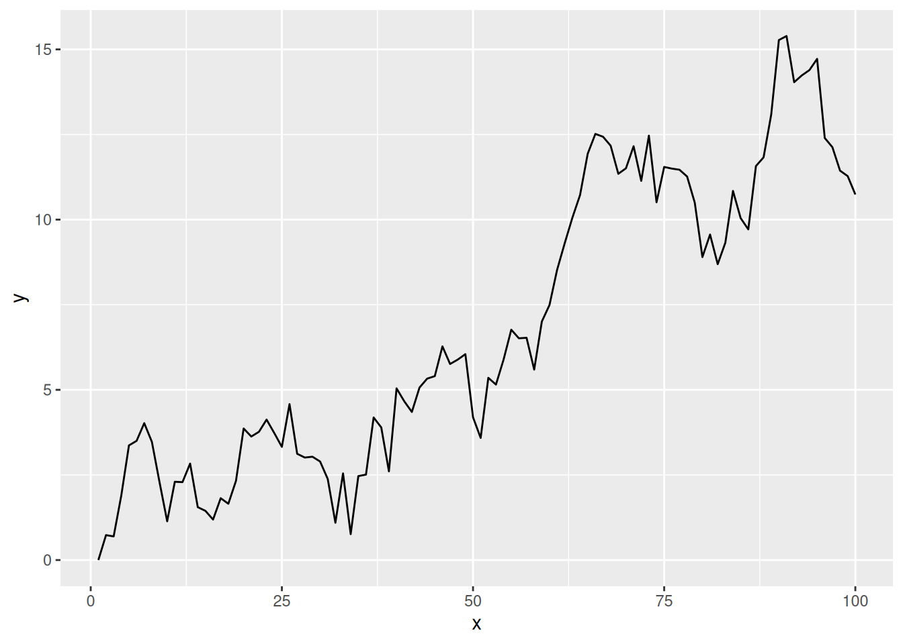
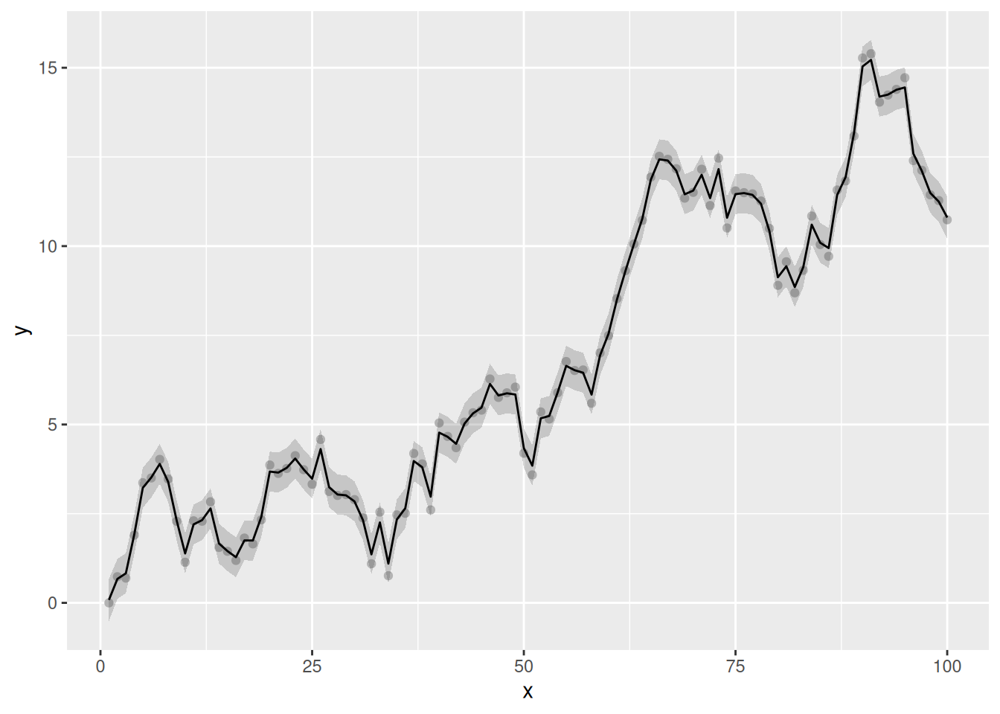
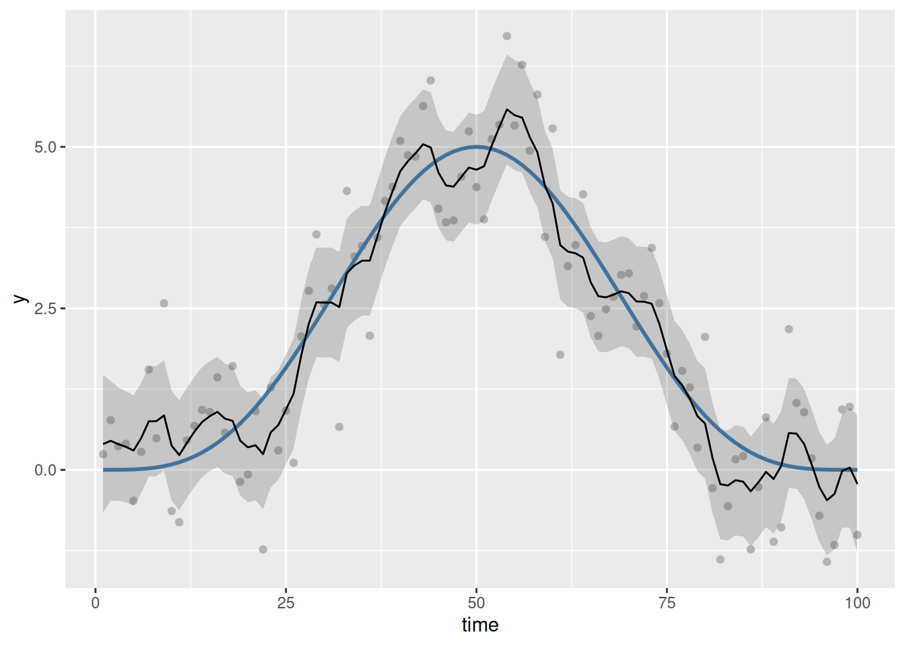
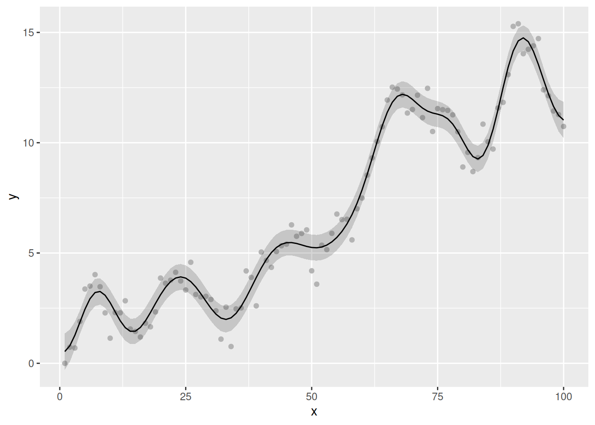
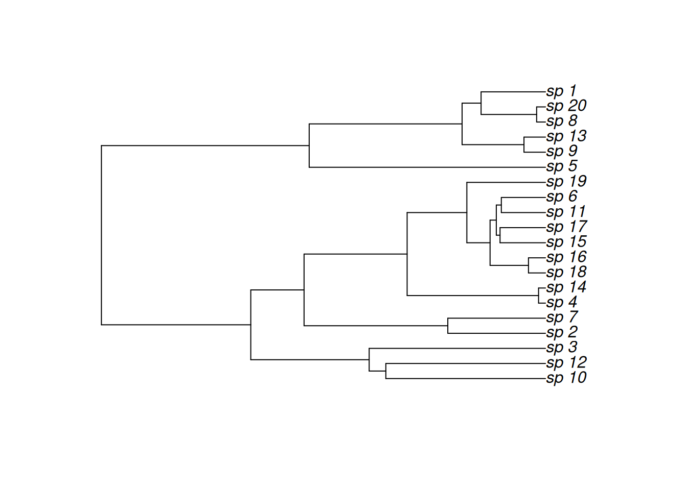
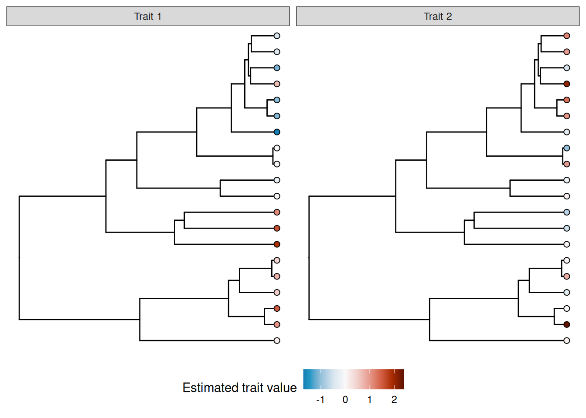

pkgs <- c("ape", "mgcv", "MRFtools", "dplyr", "ggplot2", "gratia", "ggtree")The Gaussian Markov random field basis (bs = "mrf") in mgcv is an extremely powerful and flexible “spline”, which can be used to include a range of effects into a GAM that one would not typically think of as smooth effects. As with many powerful tools in R, that power and flexibility can often bring with it additional complexity when you try to actually use the thing.
The MRF basis (bs = "mrf") allows for the definition of a Gaussian MRF in one of three ways
polys— providing a list containing numeric vectors of points defining one or more polygons, one per level of the factor provided to the smooth, where the spatial arrangement of polygons is used to build a neighbourhood structure and from that a penalty matrix ,nb— providing the neighbourhood structure itself, as a list, with one element per level of the factor supplied to the smooth. Each element of this list provides the indices of the levels for the neighbours of that element. From this list, the corresponding penalty matrix is created, andpenalty— providing the penalty matrix directly.
The flexibility of the MRF basis arises from the last of these — the ability to provide a penalty matrix directly. However, many users of mgcv are unlikely to be able to specify penalty themselves, especially because there are some strict rules that must be followed in order for the correct to be specified without producing an error from mgcv. MRFtools aims to take some of the pain out of using the MRF basis by providing functions that create the penalty matrix for you for a range of commonly encountered R objects and structures.
This vignette will briefly describe how to use MRFtools to specify a penalty matrix, and how to use that penalty matrix with mgcv. The aim is to demonstrate the basic workflow, not to provide an exhaustive overview of MRFtools capabilities. Also, the specific details of workflow are in a bit of flux as Eric and I work towards an initial CRAN release of MRFtools.
Installing MRFtools
If you have the tools to build source packages, you can use the remotes package to install MRFtools.
# do we need to install remotes?
if (isFALSE(require("remotes"))) {
install.packages("remotes")
}
remotes::install_github("eric-pedersen/MRFtools")Soon, we’ll have MRFtools available for installation via ROpenSci’s R Universe system.
Setup
To follow this vignette, you’ll need the following packages
The ggtree package is from BioConductor, so if you do not have it installed, you’ll need to install the BiocManager package first to perform the installation:
if (!require("BiocManager", quietly = TRUE))
install.packages("BiocManager")
BiocManager::install("ggtree")Discrete random walks
One of the ways in which regular temporal data can be modelled in general is through a discrete random walk (RW). In this section I’ll illustrate how to create the corresponding penalty matrix for a first order discrete random walk and include this in a GAM.
A discrete first order random walk (RW1) is defined by
We can simulate a RW1 using the following function
rw1_sim <- function(n, sigma = 1, tau = 1) {
# n = length of the random walk
# sigma = sd of initial state x1
# tau = precision of increments (var = 1/tau)
# initial state
x <- numeric(n)
x[1] <- rnorm(1, mean = 0, sd = sigma)
# RW1 increments
eps <- rnorm(n - 1, mean = 0, sd = 1 / sqrt(tau))
# accumulate
x[2:n] <- x[1] + cumsum(eps)
x
}
rw1_sim <- function(n, sigma = 1, x0 = 0) {
c(x0, x0 + cumsum(rnorm(n - 1, 0, sigma)))
}Let’s simulate a 100 time step series from a RW1 and store the data in a data frame
and visualise it
df |>
ggplot(
aes(x = x, y = y)
) +
geom_line()
To model this time series using a Gaussian MRF and the MRF basis, we need to do a couple of things to prepare the data for mgcv
Create the penalty matrix , and
Coerce the time covariate, here
x, into a factor.
This latter step seems an odd thing to do for a time series, but it is a requirement of mgcv and reflects the original intention of modelling discrete areal data.
Creating
The penalty matrix is created using mrf_penalty(), which for the RW1 talks a vector of regularly spaced discrete time points. To create for our series, we use
S <- with(df, mrf_penalty(x))This creates an "mrf_penalty" object, a matrix with some extra attributes:
SMarkov Random Field penalty
Type: sequential
N : 100As it is a little cumbersome to visualize a 100 by 100 matrix, we’ll repeat the above using on the first 10 time points
with(df, mrf_penalty(x[1:10])) |>
as.matrix() 1 2 3 4 5 6 7 8 9 10
1 1 -1 0 0 0 0 0 0 0 0
2 -1 2 -1 0 0 0 0 0 0 0
3 0 -1 2 -1 0 0 0 0 0 0
4 0 0 -1 2 -1 0 0 0 0 0
5 0 0 0 -1 2 -1 0 0 0 0
6 0 0 0 0 -1 2 -1 0 0 0
7 0 0 0 0 0 -1 2 -1 0 0
8 0 0 0 0 0 0 -1 2 -1 0
9 0 0 0 0 0 0 0 -1 2 -1
10 0 0 0 0 0 0 0 0 -1 1The negative values on the off-diagonals indicate that a pair of samples are (temporal) neighbours. The diagonal of the matrix counts the number of neighbours for each observation. At the start and end time points of the series, the observations have a single neighbour, while the intermediate time points have two neighbours: the observation prior ( and the one after () .
Creating the data
The second step, creating a factor with the correct levels, is required for mgcv to align observations for each unit with a particular row and column of . This is done by using a factor for the time variable, where the levels of the factor identify the time points. This construction allows for multiple observations for each row/column in . We’ll look at examples like that in other vignettes. For now, we just need to create a new factor, fx, from x with the correct levels.
df <- df |>
mutate(
fx = factor(x, levels = x)
)Fitting the model
Now we are ready to fit the GAM using mgcv
m_rw1 <- gam(
y ~ s(fx, bs = "mrf", xt = list(penalty = S)),
data = df,
method = "REML"
)Instead of using a smooth of , as we would in a typical GAM, we request a smooth of the factor fx. The bs argument allows us to specify the type of basis to use for the smooth function. Here, we specify "mrf" to use the Gaussian MRF basis. The final step is to pass the penalty matrix to the smooth constructor, which we do through the xt argument. This needs to be a list, and as we are passing the penalty matrix, we need to name the element of this list penalty.
Visualising the fitted smooth
Neither mgcv nor gratia are currently capable of plotting arbitrary MRF smooths of the type we just fitted. We plan on providing plotting methods that can be used by gratia, but these are yet to be implemented. Instead, we can evaluate the fitted model at the observed time points and plot the predicted values.
m_rw1 |>
fitted_values() |>
mutate(x = as.character(fx) |> as.numeric()) |>
ggplot(
aes(x = x, y = .fitted)
) +
geom_point(
data = df,
aes(x = x, y = y),
col = "grey70"
) +
geom_ribbon(
aes(ymin = .lower_ci, ymax = .upper_ci),
alpha = 0.2
) +
geom_line()
The fitted trend is extremely wiggly and, by the usual conventions of models involving smooths, not very, well, smooth. This isn’t surprising in this case, however, as the underlying data generation process is a RW1. Importantly, the fitted trend hasn’t interpolated the data; there has been some shrinkage of the coefficients. This is a full-rank MRF, with (99) basis functions. If we consult the model summary, we that the effective degrees of freedom for the fitted trend is 79.05
overview(m_rw1)
Generalized Additive Model with 2 terms
term type k edf ref.edf statistic p.value
<chr> <chr> <dbl> <dbl> <dbl> <dbl> <chr>
1 Intercept parametric NA 1 1 213. <0.001
2 s(fx) MRF 99 79.0 99 180. <0.001 The trend uses ~20 fewer degrees of freedom than theoretically possible given the RW1 penalty allows.
How does the discrete RW1 work with a different underlying model? In the next example we simulate autocorrelated observations from the smooth function
To simulate from this function plus AR(1) noise we can use
sim_fun <- function(n = 100, rho) {
time <- 1:n
xt <- time / n
Y <- (1280 * xt^4) * (1 - xt)^4
y <- as.numeric(Y + arima.sim(list(ar = rho), n = n))
tibble(y = y, time = time, f = Y)
}which we use to generate 100 observations, with moderate autocorrelation ( = 0.1713)
df2 <- withr::with_seed(
321,
sim_fun(rho = 0.1713)
)Next, we generate the penalty matrix for these observations
S2 <- with(df2, mrf_penalty(time))As there are 100 observations, this and the earlier penalty matrix are identical as there are the same number of time points and they have the same labels.
To create the factor, we can use the get_labels() helper function. This will ensure that the factor of time points we create has the correct levels
df2 <- df2 |>
mutate(
f_time = factor(time, levels = get_labels(S2))
)While get_labels() is not necessary here, there are many situations where you will want to create the penalty matrix for a set of levels, some of which are not observed in the data you will use to fit the model. Careful construction of the factor you will pass to the MRF smooth is required in those cases.
Now we can fit the GAM to the simulated data, again passing along the penalty matrix to the xt argument of mgcv’s s() function
m2_rw1 <- gam(
y ~ s(f_time, bs = "mrf", xt = list(penalty = S2)),
data = df2,
method = "REML"
)Looking at the model summary we see strong penalization.
overview(m2_rw1)
Generalized Additive Model with 2 terms
term type k edf ref.edf statistic p.value
<chr> <chr> <dbl> <dbl> <dbl> <dbl> <chr>
1 Intercept parametric NA 1 1 24.3 <0.001
2 s(f_time) MRF 99 26.7 99 5.35 <0.001 As with the previous example, the smooth was initialised with 99 basis functions (number of time points - 1), but the smoothness selection process has shrunk the coefficients for the basis functions to the extent that the fitted smooth uses just 26.73 effective degrees of freedom.
Plotting the fitted smooth is again illustrative of the behaviour of the discrete RW1:
m2_rw1 |>
fitted_values() |>
mutate(time = as.character(f_time) |> as.numeric()) |>
ggplot(
aes(x = time, y = .fitted)
) +
geom_point(
data = df2,
aes(x = time, y = y),
col = "grey70"
) +
geom_line(
data = df2,
aes(y = f),
col = "steelblue",
linewidth = 1
) +
geom_ribbon(
aes(ymin = .lower_ci, ymax = .upper_ci),
alpha = 0.2
) +
geom_line()
Despite the underlying model being smooth, we do not achieve a visually smooth fit (in the usual sense). The model has overfitted the sample of data; it has done this because as far as the RW1 is concerned, the AR(1) noise is part of the signal we tasked the model with finding when we fitted the RW1 process.
If we believe the true relationship between, in this case, time and the response, , is smooth (in the usual sense), then we should instead fit a model using one of the standard spline bases provided by mgcv. The RW1, and most models that mrf_penalty() can (or is planned to) fit, are for use when we want to fit a stochastic trend to the data.
That said, we can get a smoother fit using the RW1 penalty; we just need to reduce the dimensionality of the penalty we use. Instead of creating the rull penalty matrix, here
dim(S)[1] 100 100we instead can fit a reduced rank penalty, by setting k for the smooth to a lower value than 99.
Returning to the original example, we fit a visually smooth RW1 by restricting k so that the penalty uses at most 20 basis functions. Note that this is done when specifying the smooth in the model formula; we still need to pass the full RW1 penalty matrix to gam():
m3_rw1 <- gam(
y ~ s(fx, bs = "mrf", xt = list(penalty = S), k = 20),
data = df,
method = "REML"
)When we visualise the model predictions, we note that the fitted smooth is now, well, smooth:
m3_rw1 |>
fitted_values() |>
mutate(x = as.character(fx) |> as.numeric()) |>
ggplot(
aes(x = x, y = .fitted)
) +
geom_point(
data = df,
aes(x = x, y = y),
col = "grey70"
) +
geom_ribbon(
aes(ymin = .lower_ci, ymax = .upper_ci),
alpha = 0.2
) +
geom_line()
While this is of interest in developign an understanding of how MRF smooths work, for practical purposes it is of limited interest in this case. The choice of k = 20 is not the optimal complexity for these data — we already saw that optimal function used ~20 EDF — and as a user you are free to set k to whatever value you want (as long as it is less and greater than 2.) If you want to obtained a smooth trend, you would be better served with one of mgcv’s standard smoothers, and perhaps fit the model using NCV or include an autocorrelation process (via bam() or gamm() say).
Phylogenetic smooths
Next, we consider how to include phylogenetic information into a GAM, such that genetically more-similar species are assumed to have more similar response values than more genetically distant taxa. We could include species identity as a random intercept term in the model, but individual species means (intercepts) would be shrunk more or less to 0; nothing would help pull genetically similar taxa toward one another. A Gaussian MRF is a general way to represent graphical information, which makes it ideal for representing phylogenetic trees.
The example below is a simplified version of Nick Clark’s blog post on including phylogenetic information into GAMs. Users of MRFtools are encouraged to read Nick’s post as it represents an excellent use case for a hierarchical GAM (sensu Pedersen et al. 2019) and of MRFtools to include phylogenetic information into the model.
We being by simulating a simple phylogenetic tree using the ape package
n_species <- 20
tree <- withr::with_seed(
2026-3-25,
rcoal(n_species, tip.label = paste0('sp_', seq_len(n_species)))
)
species_names <- tree$tip.label
plot(tree)
Next, we simulate some response data for each species to demonstrate the utility of the MRF smoothers. Here, we assume that we have observed some outcomes and for multiple individuals from each species in our dataset.
The species-level mean value () for trait follows a phylogenetic random walk (specifically an OU model). The species-level mean value for trait () is not conserved; it is normally distributed at the species level.
We will also generate some observation-level error for each trait in each observed individual.
n_obs <- 5
withr::with_seed(
seed = 20260326,
{
mu1 <- rTraitCont(tree,model = "OU",sigma = 0.05, alpha=0.2) |>
scale(center = FALSE, scale = TRUE) |>
as.vector()
mu2 <- rnorm(n_species) |>
scale(center = FALSE, scale = TRUE) |>
as.vector()
e1 <- rnorm(n_species*n_obs, mean = 0, sd = 0.5)
e2 <- rnorm(n_species*n_obs, mean = 0, sd = 0.5)
}
)
phylo_df <- tibble(
species = rep(species_names, times = n_obs),
mu1 = rep(mu1, times = n_obs),
mu2 = rep(mu2, times = n_obs),
y1 = mu1 + e1,
y2 = mu2 + e2
)
phylo_df# A tibble: 100 × 5
species mu1 mu2 y1 y2
<chr> <dbl> <dbl> <dbl> <dbl>
1 sp_10 1.60 -0.580 1.17 -0.781
2 sp_12 1.12 -0.728 0.508 -0.672
3 sp_3 1.88 0.0687 1.67 -0.614
4 sp_2 -0.0877 0.112 0.0950 0.613
5 sp_7 -0.213 -0.177 -0.170 -0.379
6 sp_4 0.0419 0.975 0.218 1.57
7 sp_14 -0.0167 -0.974 -0.580 -1.24
8 sp_18 -1.09 1.03 -1.02 0.431
9 sp_16 -1.03 1.33 -0.882 1.29
10 sp_15 0.667 2.06 0.154 2.13
# ℹ 90 more rowsWe can visualize the distribution of true means of the two traits across the tree using the ggtree package:
library(ggtree)
mu1_tree <- data.frame(label=tree$tip.label, variable = mu1) |>
full_join(tree,y = _, by = "label")
mu2_tree <- data.frame(label=tree$tip.label, variable = mu2) |>
full_join(tree,y = _, by = "label")
trs <- list(`Trait 1` = mu1_tree, `Trait 2` = mu2_tree)
class(trs) <- 'treedataList'
trait_plot = ggtree(trs) +
facet_wrap(~.id) +
geom_tippoint(aes(colour=variable))+
scale_colour_gradient2("mean trait value",
low = "blue",high = "red") +
theme(legend.position = "bottom")
trait_plot
MRFtools has a mrf_penalty() method for phylogentic trees like tree; at the time of writing we support both the "phylo" class from package ape and the "phylo4" class from phylobase. To create the phylogenetic penalty matrix, we pass tree to mrf_penalty().
S_phylo <- mrf_penalty(tree)The default penalty for phylogenies is “rw1”, which is a first-order random walk model of trait evolution (synonymous with the standard “Brownian motion” model of trait evolution). Also by default, the penalty matrix generated is for the entire tree (including internal nodes)1. The precision matrix () for “rw1” for a whole tree is:
This is a model of continuous trait evolution via a random walk wherein phenotypic change accumulates in both directions at random. Future versions of MRFtools will support alternative models for phenotypic change.
Since our penalty matrix includes levels for both the observed species (tips) and their common ancestors (nodes), we need to add those extra node names into the data. We will create a second factor variable (species_plus) to denote the augmented vector of species names.
#|label: relabel-phylo
phylo_df <- phylo_df |>
mutate(
species = factor(species),
species_plus = factor(species, levels = get_labels(S_phylo)))We will fit one model to each of the two traits.
As with the previous examples, we pass the species_plus factor to s(), set the basis to "mrf", and provide the penalty matrix via the xt argument. We have also included a standard random effect smoother, to help assess the degree of phylogenetic information in the variable; if there is little phylogenetic information, the phylogenetic smoother will be shrunk toward zero, whereas if there is strong phylogenetic signal, the random effect smoother will be shrunk toward zero (as the model is able to capture the amount of interspecific variation in trait means using fewer degrees of freedom from the phylogenetic smoother).
We also have to specify drop.unused.levels = FALSE within the gam, as otherwise mgcv will treat the unobserved nodes as missing and drop them from the model.
m_phylo1 <- gam(
y1 ~ s(species_plus, bs = "mrf", xt = list(penalty = S_phylo)) +
s(species, bs = "re"),
data = phylo_df,
method = "REML",
drop.unused.levels = FALSE
)
m_phylo2 <- gam(
y2 ~ s(species_plus, bs = "mrf", xt = list(penalty = S_phylo)) +
s(species, bs = "re"),
data = phylo_df,
method = "REML",
drop.unused.levels = FALSE
)
overview(m_phylo1)
Generalized Additive Model with 3 terms
term type k edf ref.edf statistic p.value
<chr> <chr> <dbl> <dbl> <dbl> <dbl> <chr>
1 Intercept parametric NA 1 1 3.64 <0.001
2 s(species_plus) MRF 38 16.7 19 26.2 <0.001
3 s(species) Random effect 20 0.000826 19 0.0000430 0.0135 We can see that the MRF term in the first model ends up with a large assigned degrees of freedom (edf) with almost no edf for the random effect term, indicating a strong phylogenetic signal in the trait value.
Now let’s look at the overview for the second model:
overview(m_phylo2)
Generalized Additive Model with 3 terms
term type k edf ref.edf statistic p.value
<chr> <chr> <dbl> <dbl> <dbl> <dbl> <chr>
1 Intercept parametric NA 1 1 2.23 0.0287
2 s(species_plus) MRF 38 0.927 19 1.72 0.3520
3 s(species) Random effect 20 16.8 19 9.39 <0.001 We can see that there is almost no variation assigned to the MRF, while the random effect term has an EDF almost equal to the number of species.
References
Pedersen, Eric J, David L Miller, Gavin L Simpson, and Noam Ross. 2019. “Hierarchical Generalized Additive Models in Ecology: An Introduction with Mgcv.” PeerJ 7: e6876. https://doi.org/10.7717/peerj.6876.